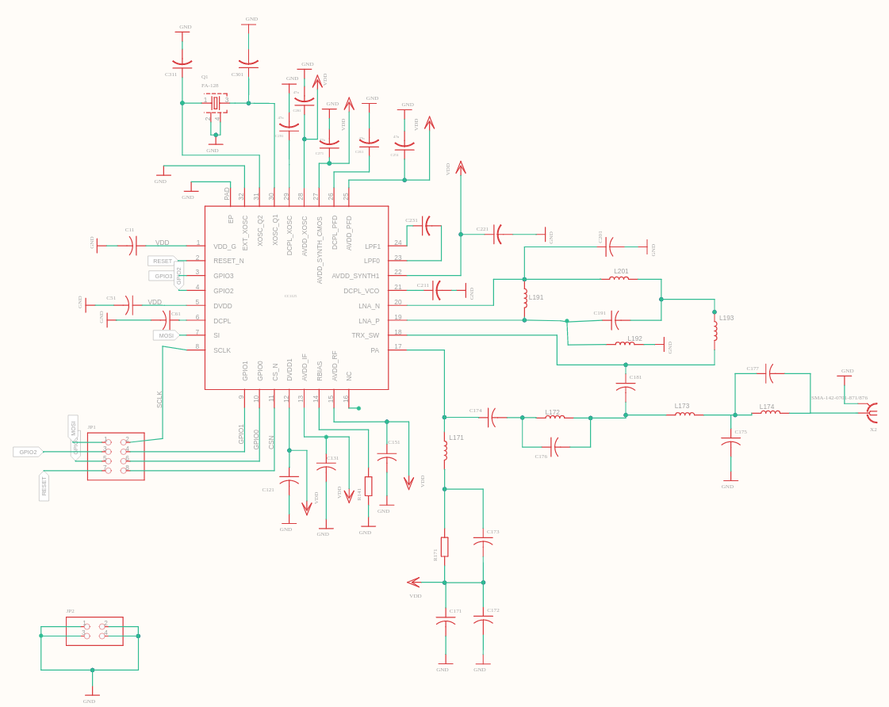
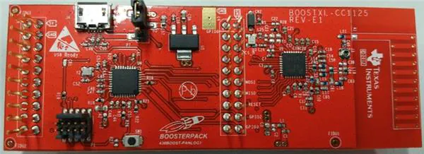

The CC1125 device is a fully integrated single-chip radio transceiver designed for high performance at very low-power and low-voltage operation in cost-effective wireless systems. All filters are integrated, thus removing the need for costly external SAW and IF filters. The device is mainly intended for the ISM (Industrial, Scientific and Medical) and SRD (Short Range Device) frequency bands at 164–192 MHz, 274–320 MHz, 410–480 MHz, and 820–960 MHz.
The CC1125 device provides extensive hardware support for packet handling, data buffering, burst transmissions, clear channel assessment, link quality indication, and Wake-On-Radio. The main operating parameters of the CC1125 device can be controlled through an SPI interface. In a typical system, the CC1125 device will be used with a microcontroller and only a few external passive components.
The task was to design a 4-layer RF PCB for the peripheral circuit of CC1125 for 435 MHz band. All layers are grounded except the third layer which is defined as VCC layer. On the first and fourth layer, signal traces were placed.
Following is a schematic diagram made in EAGLE.  The board design and printed PCB are shown as follows. The red traces are on the first layer whereas the blue traces are on the fourth layer.The soldering and testing of PCB will be done after the lockdown is over.
Shown below is a CC1125 BoostXl development board available in the market. Although it comes with an inbuilt microcontroller, one can connect an external microcontroller as well. 